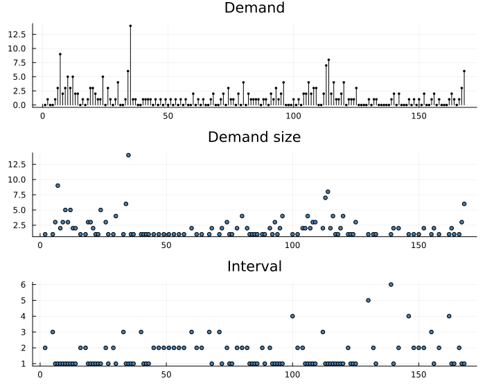
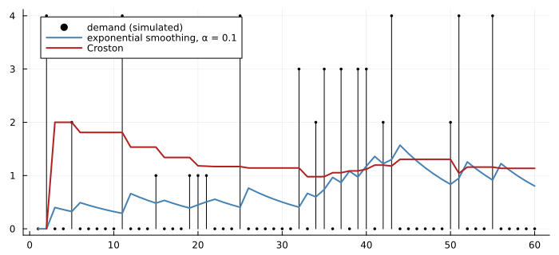
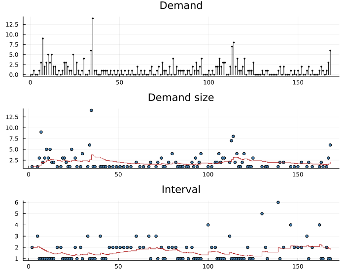
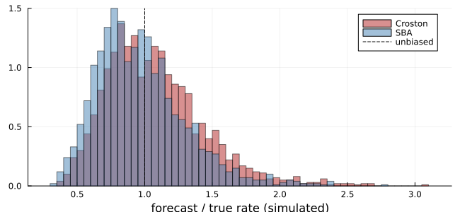
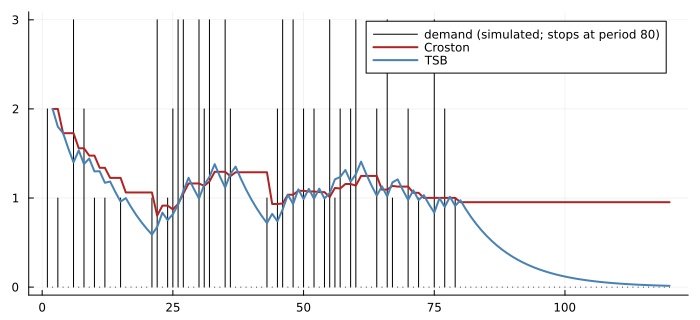
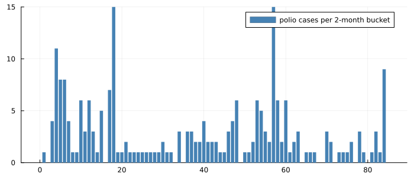
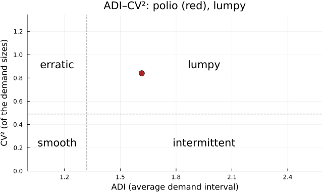
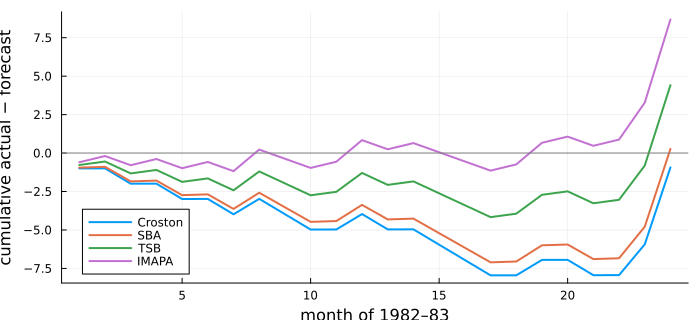

Mostly Nothing, Then Something
using TSAnalytics, Plots, Statistics, Random
using StatsAPI: fitted
y = dataset("polio").value
println(length(y), " months of US polio cases, 1970-1983: ", count(==(0), y), " with none, largest ",
Int(maximum(y)))168 months of US polio cases, 1970-1983: 64 with none, largest 14plot(demand_intervals(y); size = (700, 560))
Monthly poliomyelitis cases in the United States, 1970–1983: no cases in 64 of 168 months, and otherwise a few, up to fourteen. Spare-part demand looks the same, and so do slow-moving retail lines and rare equipment failures. Most periods are empty. Every forecasting method in this book so far assumes a series that moves continuously, and every one handles this badly.
No textbook in this project's reference set covers it. Hamilton, Montgomery, Tsay, Shumway & Stoffer, Cowpertwait, and the fpp lecture notes contain no mention of Croston's method or intermittent demand. The nearest material is Shumway & Stoffer's Poisson hidden Markov model for earthquake counts (2017, §6.9, printed pp. 334–341, PDF 344–351), a different model class. The methods in this chapter come from operational research, from their own papers: Croston (1972), Syntetos & Boylan (2005), Teunter, Syntetos & Babai (2011), Nikolopoulos et al. (2011) and Petropoulos & Kourentzes (2015). The topic sits outside the classical time-series curriculum, and it is not obscure: it is the daily work of anyone forecasting inventory.
Why smoothing fails
Simple exponential smoothing (Chapter 24) updates its level after every period. Here that is the wrong thing to do. After each empty month the level falls, after each demand it jumps, and just before a demand, when the forecast matters most, it is at its lowest. A simulated series with demand in about four periods in ten shows it:
rng = MersenneTwister(59)
x = [rand(rng) < 0.4 ? Float64(rand(rng, 1:4)) : 0.0 for _ in 1:60]
function ses_path(x, α)
f = zeros(length(x)); f[1] = x[1]
for t in 2:length(x)
f[t] = α * x[t-1] + (1 - α) * f[t-1]
end
return f
end
cr = croston(x)
plot(x; seriestype = :sticks, color = :black, marker = :circle, markersize = 2, label = "demand (simulated)",
size = (700, 320), legend = :topleft)
plot!(ses_path(x, 0.1); color = :steelblue, linewidth = 2, label = "exponential smoothing, α = 0.1")
plot!(fitted(cr); color = :firebrick, linewidth = 2, label = "Croston")
The smoothing line saw-tooths down through every gap. Croston's line changes only when a demand arrives.
Croston's decomposition
Croston (1972) split the series in two: the size of each demand z_k, and the interval p_k since the previous one. Each is smoothed by exponential smoothing, updated only at a demand, and the forecast is their ratio:
\[\hat z \leftarrow \alpha z_k + (1-\alpha)\hat z, \qquad \hat p \leftarrow \alpha p_k + (1-\alpha)\hat p, \qquad \hat y = \hat z / \hat p .\]
The forecast is a rate: expected demand per period. For polio:
m = croston(y)
println("size level ", round(m.demand_level, digits = 4), ", interval level ",
round(m.interval_level, digits = 4), ", forecast ", round(m.forecast, digits = 4), " cases a month")size level 2.067, interval level 1.8234, forecast 1.1336 cases a monthplot(demand_intervals(m); size = (700, 560))
The middle and bottom panels are the two sequences Croston smooths, each with its level as a step that moves only at a demand.
Croston is biased, and SBA corrects it
The ratio of two unbiased estimates is not an unbiased estimate of the ratio. By Jensen's inequality, E[1/p̂] > 1/E[p̂], and Croston's forecast is too high on average. Syntetos & Boylan (2005) derived the approximation E[ŷ] ≈ (1 + α/2)·μ/p for small α, and corrected by the factor 1 − α/2. That is SBA. A simulation with a known rate shows the bias and the correction:
rate(pdemand, meansize) = pdemand * meansize
truth = rate(0.25, 3.0)
sims = [begin
s = [rand(rng) < 0.25 ? Float64(rand(rng, 1:5)) : 0.0 for _ in 1:400]
count(!=(0), s) < 2 ? (NaN, NaN) :
(croston(s; alpha = 0.2).forecast, croston(s; alpha = 0.2, method = :sba).forecast)
end for _ in 1:2000]
cro = filter(!isnan, first.(sims)); sba = filter(!isnan, last.(sims))
println("true rate ", truth, "; mean Croston forecast ", round(mean(cro), digits = 4),
"; mean SBA ", round(mean(sba), digits = 4), " (α = 0.2, 2000 simulated series)")true rate 0.75; mean Croston forecast 0.8073; mean SBA 0.7265 (α = 0.2, 2000 simulated series)histogram(cro ./ truth; bins = 50, alpha = 0.5, color = :firebrick, label = "Croston", normalize = :pdf,
size = (650, 300), xlabel = "forecast / true rate (simulated)")
histogram!(sba ./ truth; bins = 50, alpha = 0.5, color = :steelblue, label = "SBA", normalize = :pdf)
vline!([1.0]; color = :black, linestyle = :dash, label = "unbiased")
Croston is 7.6% high on average; SBA is 3.1% low. The correction is an approximation and slightly over-corrects at α = 0.2, but it moves the error from one side to a smaller error on the other. statsforecast hardcodes the factor as 0.95, which is 1 − α/2 only at its fixed α = 0.1. Here the factor follows α.
When an item dies: TSB
Croston's interval level waits for the next demand. If the item has been withdrawn there is no next demand, and the forecast stays where it was indefinitely. Teunter, Syntetos & Babai (2011) replaced the interval with the probability of a demand, smoothed over every period, zero or not. During a run of zeros it decays:
dying = vcat([rand(rng) < 0.5 ? Float64(rand(rng, 1:3)) : 0.0 for _ in 1:80], zeros(40))
c2 = croston(dying)
t2 = tsb(dying; alpha_d = 0.1, alpha_p = 0.1)
plot(dying; seriestype = :sticks, color = :black, label = "demand (simulated; stops at period 80)",
size = (700, 320))
plot!(fitted(c2); color = :firebrick, linewidth = 2, label = "Croston")
plot!(fitted(t2); color = :steelblue, linewidth = 2, label = "TSB")
Forty periods after the last demand, Croston still forecasts its old rate, while TSB has fallen towards zero. For an item going obsolete, the inventory difference is the cost of stock nobody will buy.
Aggregate first: ADIDA and IMAPA
A different idea (Nikolopoulos et al. 2011): sum the series into buckets as wide as the average interval. At that width most buckets contain a demand, the series is no longer intermittent, and ordinary smoothing works. Forecast the bucket sums, then divide by the width.
w = adida(y).aggregation
nb = length(y) ÷ w
sums = [sum(y[(length(y) - nb*w) + (i-1)*w + 1 : (length(y) - nb*w) + i*w]) for i in 1:nb]
println("bucket width ", w, ": ", nb, " buckets, ", count(==(0), sums), " of them empty (",
count(==(0), y), " of ", length(y), " months were)")bucket width 2: 84 buckets, 11 of them empty (64 of 168 months were)bar(sums; color = :steelblue, label = "polio cases per $(w)-month bucket", size = (700, 300),
linewidth = 0)
The width is the rounded mean interval, and the buckets are aligned to the end of the series. IMAPA (Petropoulos & Kourentzes 2015) avoids choosing one width by averaging ADIDA's forecasts at every width from 1 to that one.
Choosing a method
Syntetos, Boylan & Croston (2005) classify a series by two numbers: the average demand interval (ADI) and the squared coefficient of variation of the sizes (CV²). Their cutoffs, 1.32 and 0.49, mark where SBA starts to beat Croston:
cp = adi_cv2(y)
println("polio: ", cp)polio: ADI = 1.61538, CV² = 0.840351 -> lumpy, use SBA (cutoffs 1.32, 0.49)plot(cp; size = (650, 380), title = "ADI–CV²: polio (red), lumpy")
The quadrant names (smooth, intermittent, erratic, lumpy) are the paper's categories. The one implementation of the rule, R's tsintermittent::idclass, decides only SBA versus Croston. Polio is lumpy: demands are irregular and their sizes vary widely, the hardest case.
Judging intermittent forecasts
Percentage errors divide by zero. Squared errors are dominated by the largest months. For stock, the question that matters is bias over time: did demand run ahead of the forecast (shortage) or behind it (excess stock)? The cumulative forecast error tracks it:
train, test = y[1:144], y[145:end]
cands = [("Croston", croston(train)), ("SBA", croston(train; method = :sba)),
("TSB", tsb(train; alpha_d = 0.1, alpha_p = 0.1)), ("IMAPA", imapa(train))]
plot(size = (700, 320), legend = :bottomleft, ylabel = "cumulative actual − forecast",
xlabel = "month of 1982–83")
for (nm, f) in cands
plot!(cumsum(test .- forecast(f, 24).point); label = nm, linewidth = 2)
end
hline!([0]; color = :gray, label = "")
The lines dip in 1982, when cases ran below every forecast, then rise with a burst in late 1983. Croston, which forecast about one case a month, ends almost exactly even. IMAPA, at 0.60, ends 8.7 cases short. On a lumpy series the methods disagree by more than their accuracy measures suggest, and which one "wins" depends on where the window ends.
No intervals
None of these methods comes with prediction intervals in either reference implementation. The models behind them, when they are written down at all, do not fit the data the methods are used on: Shenstone & Hyndman (2005) showed that the models for which Croston's method is optimal have properties inconsistent with intermittent demand, such as allowing negative values. An interval needs a model, and this package does not invent one: IntermittentForecast has no interval fields.
Summary
- Intermittent series need the size of a demand and the time between demands modelled separately; smoothing the raw series fails just before each demand.
- Croston's ratio is biased upward; SBA's factor
1 − α/2removes most of the bias. TSB decays during runs of zeros and suits obsolescence. ADIDA and IMAPA aggregate until the series is not intermittent. - ADI and CV² classify a series and suggest a method. Bias over time (CFE) is the measure that matters for stock.
- No textbook in the reference set covers the topic; the sources are the original papers.
See also
- Manual: Series That Are Mostly Zero
- Chapter 24: exponential smoothing
- Chapter 60: the other chapter in this Part